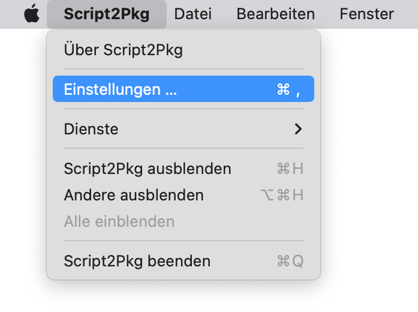
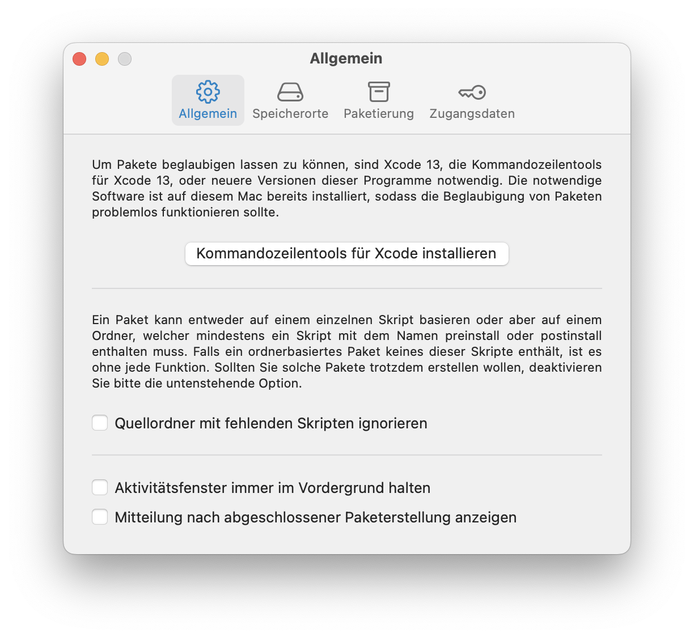
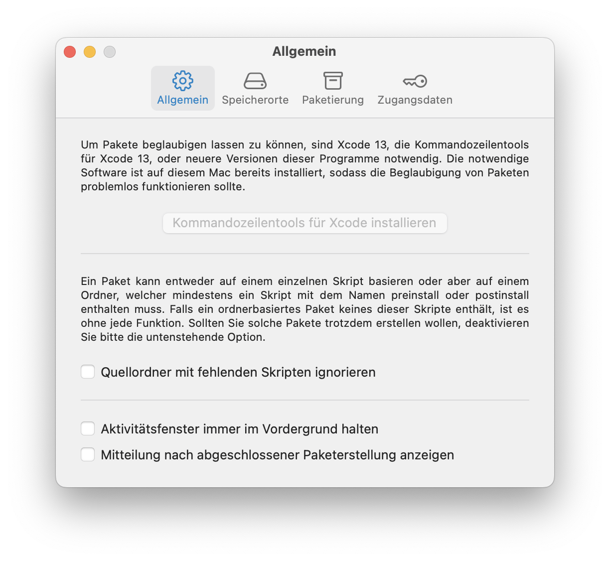

Script2Pkg
Script2Pkg
Script2Pkg
Installation von Hilfsprogrammen
Um Installationspakete von Apple beglaubigen zu lassen, benötigen Sie Xcode 13, die Kommandozeilentools für Xcode 13, oder neuere Versionen dieser Programme. Falls Sie keine kompatiblen Versionen der benötigten Hilfsprogramme installiert haben, können Sie die Installation der Kommandozeilentools für Xcode direkt aus Script2Pkg starten. Bitte gehen Sie dazu wie folgt vor:
1. Wählen Sie im Menü Script2Pkg den Menüpunkt Einstellungen … aus.

2. Wählen Sie die Option Allgemein aus.

3. Klicken Sie auf die Taste Kommandozeilentools für Xcode installieren , um die Installation zu starten. Die Installation kann je nach Geschwindigkeit der Internetverbindung 5-10 Minuten in Anspruch nehmen.
4. Sobald die Installation erfolgreich abgeschlossen wurde, wird die Taste Kommandozeilentools für Xcode installieren deaktiviert.
